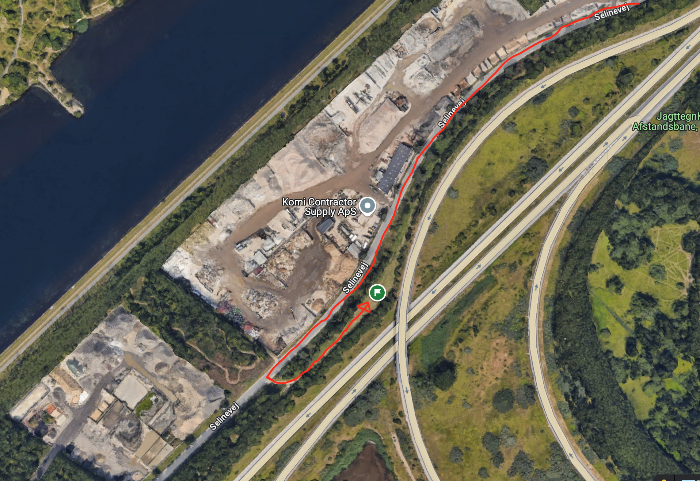
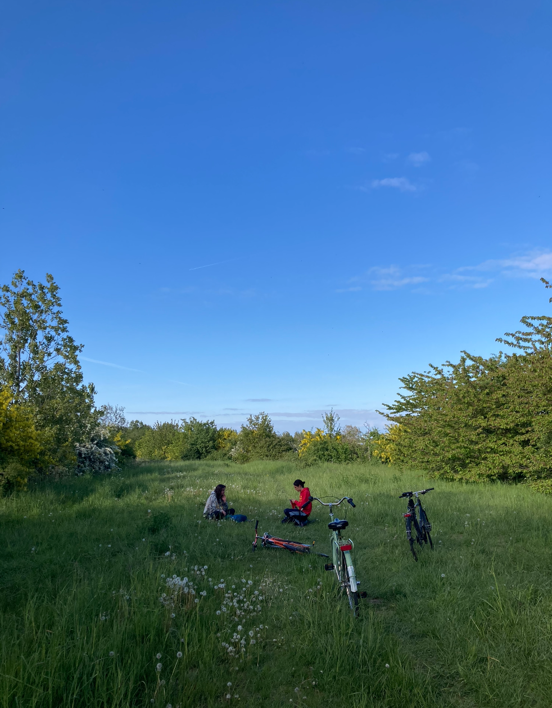
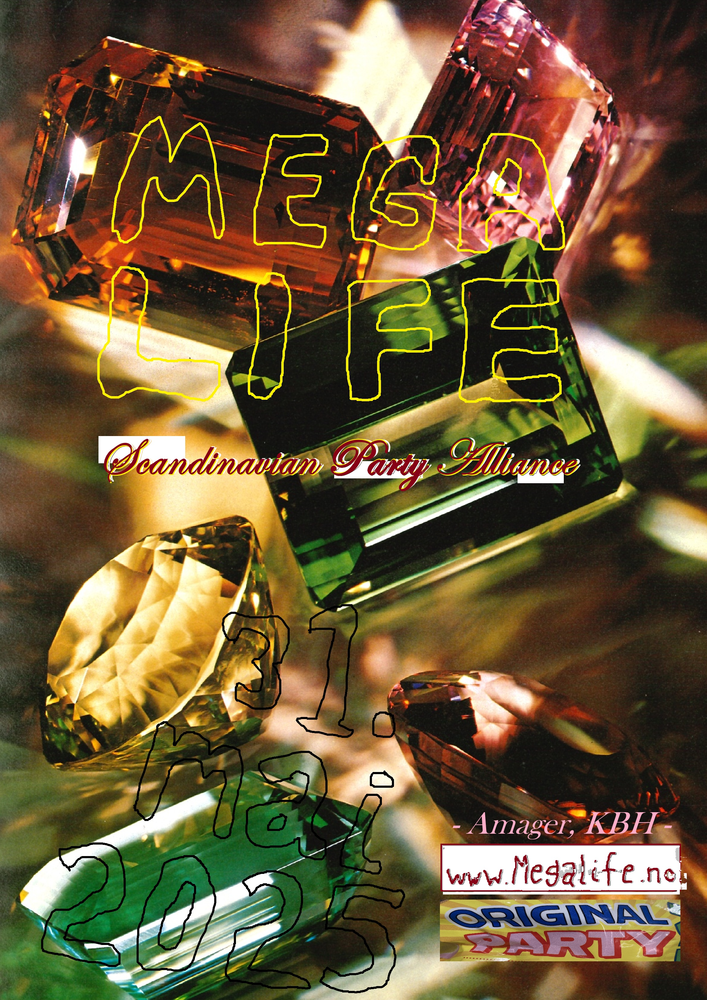

NY BESKJED 31. MAI KL 09:30
Her er timetabellen for DJene:

Her skal festen være (klikk på bildet):
(Alle må ta med syklene opp fra Selinevej hvor det kjører anleggsmaskiner, parker dem inne i skogen ved festen)

______________________________________________
BESKJED 28. MAI kl 19:31:
Vi gleder oss til festen på lørdag! Her er litt praktisk informasjon:
Vi håper alle som kommer vil støtte festen ved å kjøpe en donasjons-billett til valgfri pris: Mobilpay/Vipps-nr er 5405ZN (vi foreslår et sted mellom 50 og 150 dkk) <3
Vi prøver å gå i null med utgifter til lyd og lys osv, og vil også holde bar hvor alle inntektene går til Megalife-utlegg og leieutgifter. Der kan man kjøpe billig øl og drinker!
Været ser godt ut. Man kan komme fra kl 16.
Det blir bål og mulighet for å grille medbrakt mat.
Ta med et teppe å sitte på!
Musikken utvikler seg fra sommerens deilige dansemusikk i alle varianter til nattens dype techno- og trance-rytmer. Første dj går på kl 19 og siste går på kl 04, men det vil være hygge og fest allerede fra ettermiddagen for de som vil det.
Den eksakte lokasjonen kommer på lørdag.
Vi ses snart, følge med for line-up.
PS: bilde hvor festen skal være:

______________________________________________
Megalife fest for venner og flere avholdes 31. mai på amager (nøyaktig beliggenhet kommer her på nettsiden).
Festen starter på ettermiddagen. Det blir bål, det vil være bar, man kan bade i kanalen, ligge i gresset, mm.
Om natten blir det musikk og dansing:
Ida Engelhardt ,
Iver Barlinn Korvald,
Jon Harboe Øverdal,
og Erik Barlinn Korvald
spiller musikk.
Inviter dine venner med, kom for å feire at foråret blir til sommer!
scandinavian party alliance 2025
